Inviter vos collègues, donner à chacun le bon rôle sur le bon site, comprendre ce que chaque rôle voit et peut faire, et régler votre propre compte : profil, mot de passe, double authentification, notifications.
⏱ 15 minutes🏭 Exemple : Textile du Cap Bon👤 Pour l'administrateur de la société
Avant de commencer, ayez sous la main
L'adresse email de chaque personne à inviter
Ce que chacun fait au quotidien (pèse, signe, consulte…)
Sur quels sites chacun travaille
Un téléphone avec une application d'authentification (pour la double authentification)
Le chemin en un coup d'œil
AInviter l'équipeUne invitation par personne, avec son rôle et ses sites.
BLes rôlesLes sept rôles d'une société, et ce que chacun voit.
CModifier, suspendre, retirerChanger un rôle, en ajouter un sur un autre site, couper un accès.
DRôles sur mesureLa matrice des permissions, et un rôle à vous pour un besoin particulier.
EVotre compteProfil, langue, mot de passe, double authentification, notifications.
FPrestataires et Diva SoftwareLes rôles côté prestataire et côté plateforme.
✓Fiche de testCochez ce qui marche, notez ce qui gêne.
Où ? Tout se passe dans Paramètres › Utilisateurs et rôles (menu de gauche, en bas). Seul un Administrateur client peut inviter, changer les rôles ou retirer quelqu'un ; le Responsable environnement voit la liste mais ne la modifie pas.
Un principe à retenir. Un rôle se donne par site : la même personne peut être Opérateur atelier à Nabeul et Responsable environnement à Korba. Ce que l'écran cache, le serveur le refuse aussi : un rôle n'est jamais « contourné » par une adresse tapée à la main.
Comment lire ce guide. L'élément à cliquer est entouré en rouge ; l'encadré vert dit ce que vous devez voir.
DivaWaste · Guide 7 — Équipe, rôles et accès
A. Inviter l'équipe
A1La page Utilisateurs et rôles
Menu Paramètres › carte Utilisateurs et rôles.
En haut : les invitations en attente (avec Renvoyer et Annuler l'invitation). Dessous : les membres, avec leurs rôles par site, la double authentification, la dernière connexion et le statut.
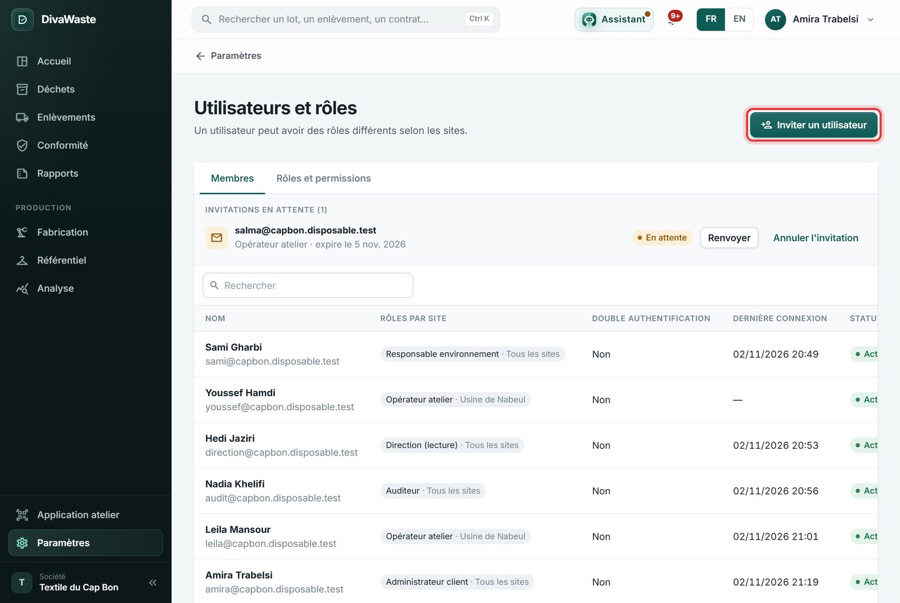
Vous devez voir chaque membre avec une étiquette « Rôle · Site », par exemple « Opérateur atelier · Usine de Nabeul ». « Tous les sites » veut dire : le rôle vaut partout, y compris pour un site créé plus tard.
DivaWaste · Guide 7 — Équipe, rôles et accès
A2Inviter une personne
Cliquez Inviter un utilisateur.
Email (obligatoire), Prénom et Nom (facultatifs : la personne pourra les corriger).
Rôle : sous la liste, une phrase dit ce que le rôle permet. Exemple : Opérateur atelier — créer, peser et ranger les lots, et charger les enlèvements, sur ses sites.
Sites : laissez vide pour tous les sites, ou choisissez-en un ou plusieurs. Ici, Youssef ne travaille qu'à Usine de Nabeul.
Un message d'accompagnement s'il le faut, puis Inviter un utilisateur.
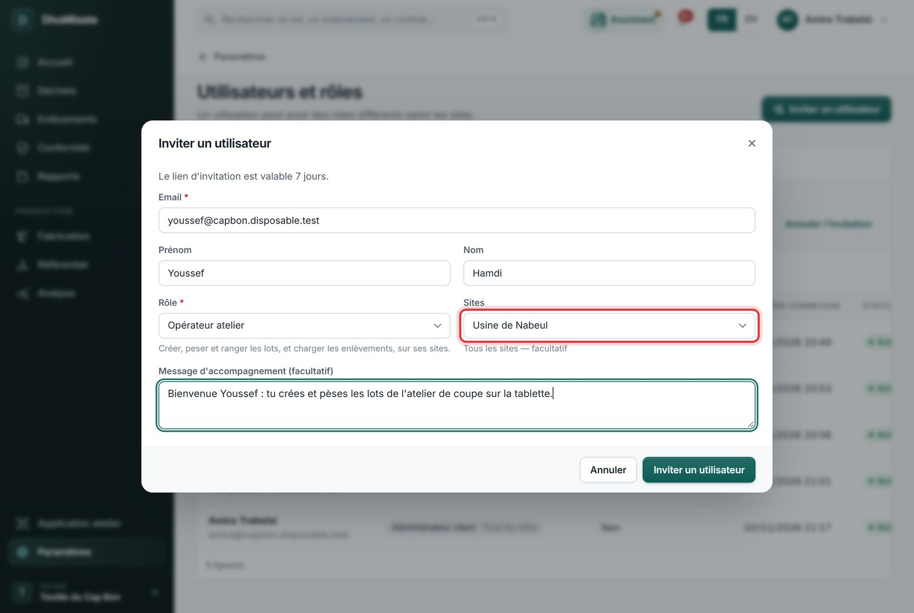
Vous devez voir « Invitation envoyée. » et la personne dans Invitations en attente, avec la date d'expiration : le lien vaut 7 jours.
A3Si l'email n'arrive pas
Renvoyer envoie un nouveau lien (l'ancien ne marche plus) ; le compteur « envoyée n fois » le garde en mémoire.
Annuler l'invitation si l'adresse est fausse : la personne ne pourra plus l'accepter. Invitez ensuite la bonne adresse.
Vérifiez les courriers indésirables : l'email vient de DivaWaste, avec le nom de votre société et votre message.
DivaWaste · Guide 7 — Équipe, rôles et accès
A4Ce que fait la personne invitée Invité
Elle ouvre le lien de l'email : la page Accepter l'invitation s'ouvre, sans compte à créer avant.
Elle vérifie son prénom et son nom, choisit un mot de passe (12 caractères au moins, avec une lettre et un chiffre).
Elle coche les Conditions générales et la Politique de confidentialité, puis Accepter l'invitation.
Elle arrive sur la page de connexion, avec le message « Invitation acceptée » : elle se connecte avec son email et son nouveau mot de passe.
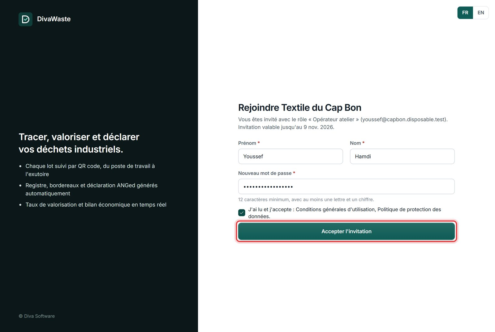
Vous devez voir, côté administrateur, la personne passer des invitations aux membres, avec son rôle et son site. Son email est confirmé d'office : c'est en ouvrant le lien qu'elle l'a prouvé.
Elle a déjà un compte DivaWaste (dans une autre société) ? Elle garde son mot de passe : l'invitation ajoute votre société à son compte. Elle choisit ensuite la société dans le menu de son nom.
DivaWaste · Guide 7 — Équipe, rôles et accès
B. Les rôles d'une société industrielle
Cinq rôles standard, maintenus par Diva Software. Choisissez le plus petit qui suffit au travail de la personne.
Rôle
Ce qu'il fait
Ce qu'il ne fait pas
Administrateur client
Tout : équipe et rôles, sites, référentiel, modules, clés API, abonnement et factures, et toutes les opérations (lots, enlèvements, contrats, Bourse, conformité, production).
—
Responsable environnement
Les déchets de bout en bout : lots, stock, enlèvements, prestataires, contrats, Bourse, bordereaux, déclarations, autorisations, rapports, production ; les réglages de la société et les clés API.
Inviter ou retirer quelqu'un, changer les rôles, l'abonnement et les factures.
Opérateur atelier
L'application atelier (téléphone, tablette) : créer, peser, compter les colis, ranger, déplacer, diviser ou regrouper les lots, imprimer l'étiquette, voir le stock, charger un enlèvement — sur ses sites.
La version bureau : il est envoyé vers l'application atelier (Guide 8).
Direction (lecture)
Tout consulter : tableau de bord, lots, stock, enlèvements, contrats, conformité, production, coûts ; exporter les rapports.
Rien modifier : aucun bouton d'action ne s'affiche.
Auditeur
Lire les lots, les enlèvements, le registre, les bordereaux, les documents, les rapports et le journal d'audit.
Le tableau de bord, les prix, la production ; rien modifier.
Rôle et site. Un rôle donné sur un site ne vaut que pour ce site : Youssef (Opérateur atelier · Usine de Nabeul) ne voit ni ne crée de lots à Korba. Pour un rôle partout, laissez le site vide.
Au moins un administrateur. DivaWaste refuse de suspendre, de retirer ou de changer le rôle du dernier Administrateur client. Gardez-en deux : en cas d'absence de l'un, l'autre peut agir.
DivaWaste · Guide 7 — Équipe, rôles et accès
B. Ce que chaque rôle voit Les mêmes données, des écrans différents
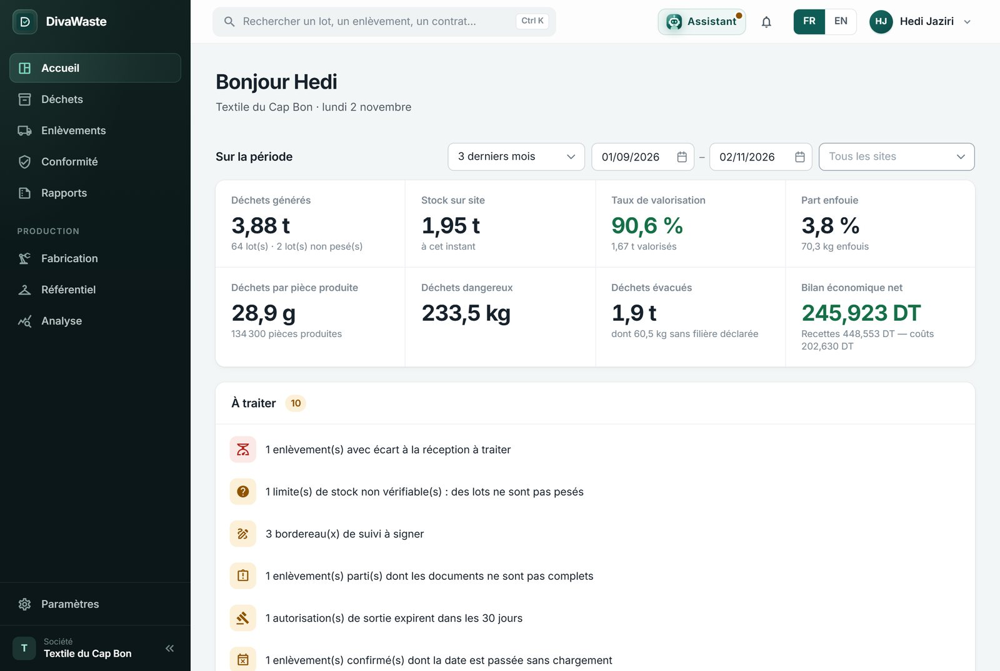
Direction (lecture) : l'Accueil complet, sans « Nouveau lot » ni « Nouvelle demande ».
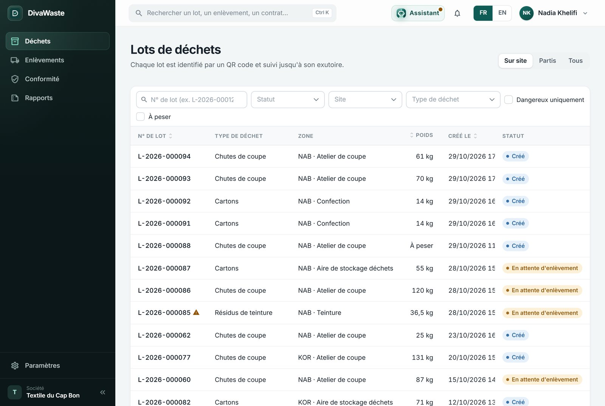
Auditeur : arrive sur les lots ; menus Déchets, Enlèvements, Conformité, Rapports.
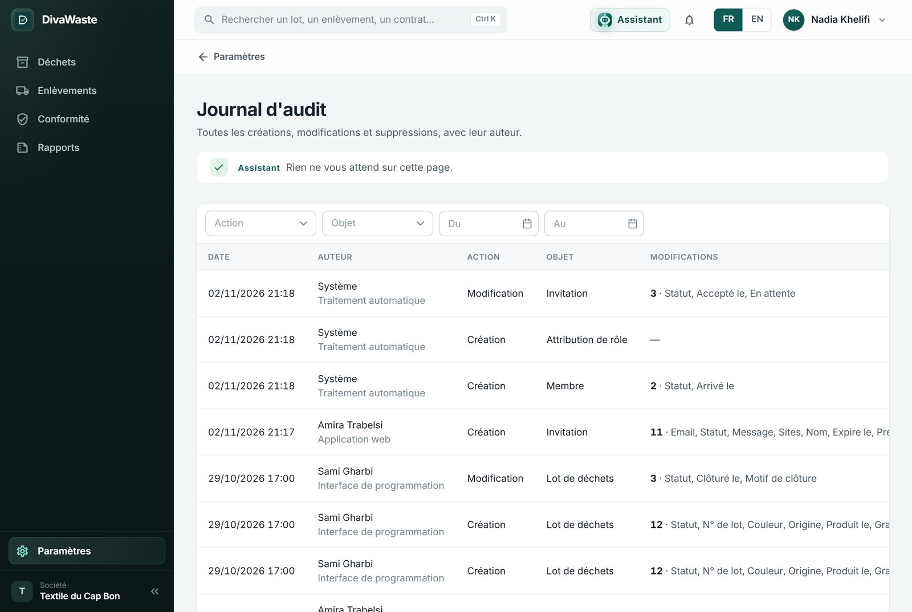
Auditeur : le journal d'audit, qui a créé, modifié ou supprimé quoi.
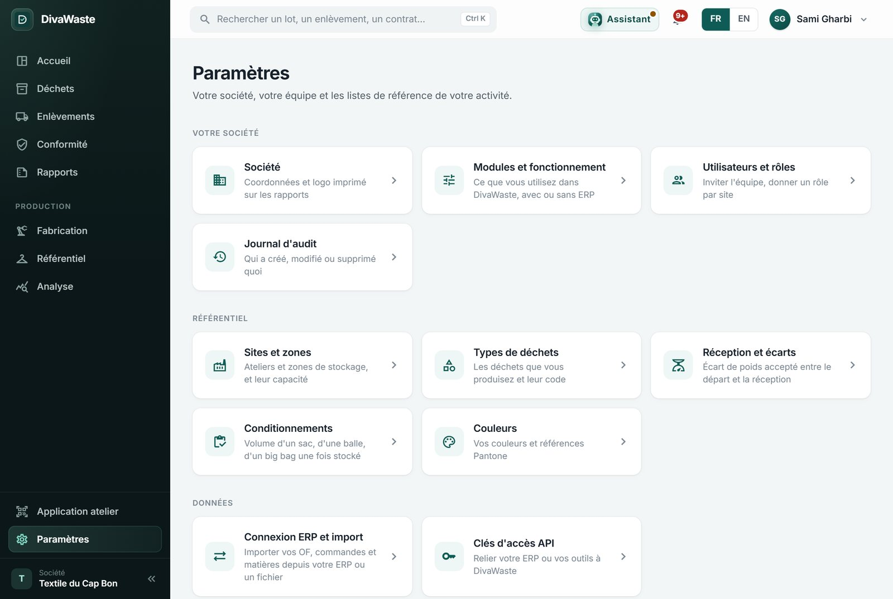
Responsable environnement : Paramètres sans Abonnement ; Utilisateurs en lecture.
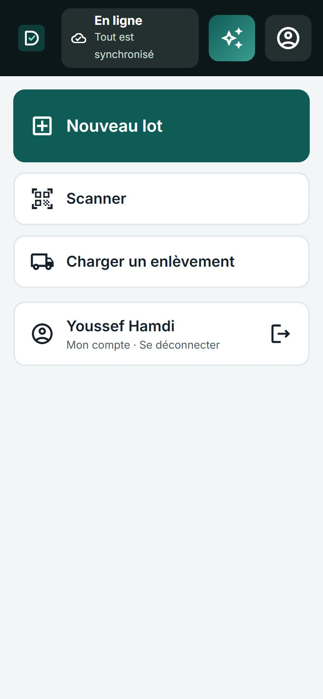
Opérateur atelier : il se connecte avec le même lien que les autres et arrive directement dans l'application atelier : Nouveau lot, Scanner, Charger un enlèvement. S'il tape l'adresse d'un écran de bureau, il est renvoyé ici.
Le menu suit le rôle. Un menu qui n'apparaît pas n'est pas un oubli : le rôle n'y a pas droit. Si quelqu'un a besoin d'un écran, changez son rôle (C) plutôt que de lui prêter un compte.
DivaWaste · Guide 7 — Équipe, rôles et accès
C. Modifier, suspendre, retirer
C1Changer les rôles d'un membre
Cliquez sur la ligne du membre (ou sur ⋯ au bout de la ligne, puis Modifier les rôles).
Une ligne par rôle : Rôle et Site (vide = tous les sites). Ajouter un rôle pour un autre site ; la corbeille enlève une ligne.
Enregistrer : le changement vaut dès la page suivante de la personne.
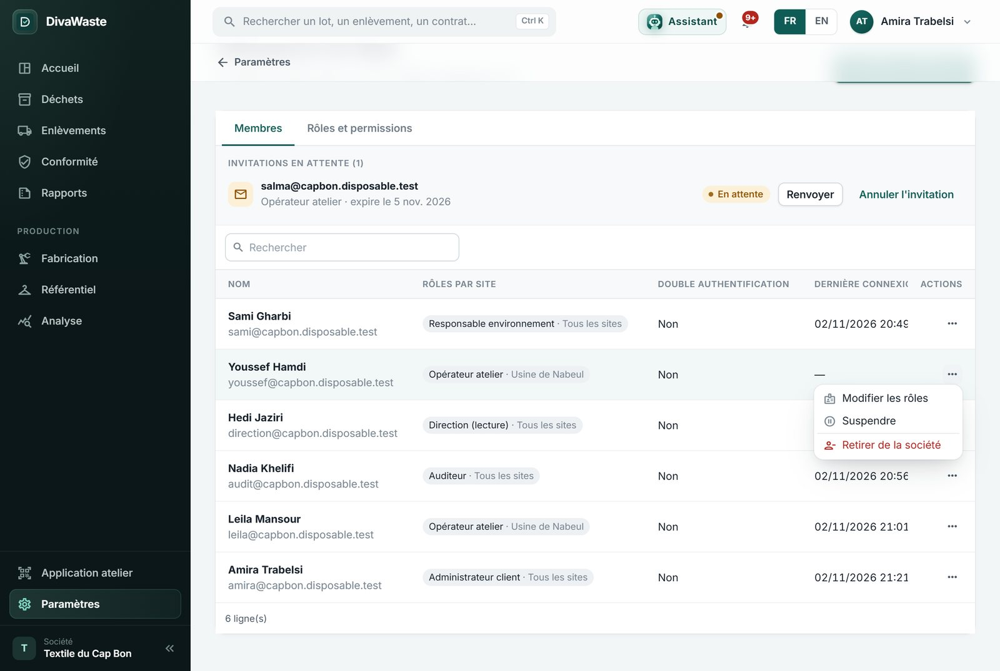
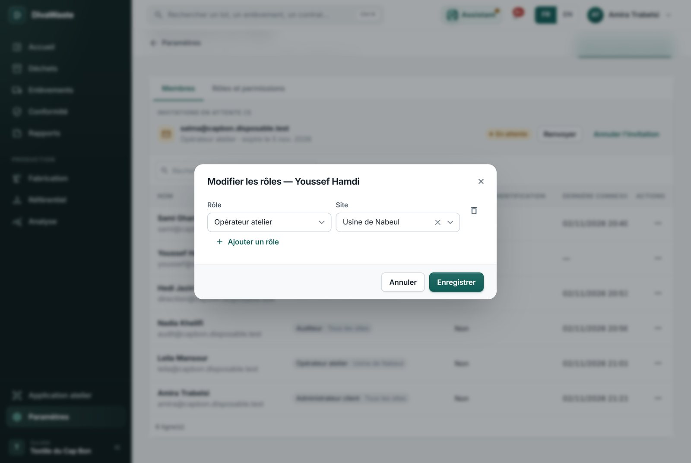
C2Couper un accès
Action
Effet
Suspendre
La personne ne peut plus se connecter à votre société ; ses rôles sont gardés. Réactiver les lui rend tels quels. Pour une absence longue, un prestataire de passage…
Retirer de la société
Elle perd tout accès à votre société. Son compte personnel reste (elle peut appartenir à d'autres sociétés). Ce qu'elle a fait reste à son nom dans le journal d'audit.
Un départ ? Suspendez ou retirez la personne le jour même : ses accès ouverts à votre société sont coupés aussitôt, sur le bureau comme sur l'application atelier.
DivaWaste · Guide 7 — Équipe, rôles et accès
D. La matrice des permissions et les rôles sur mesure
D1Lire un rôle
Onglet Rôles et permissions : à gauche les rôles, à droite ce qu'ils permettent, par domaine (Lots de déchets, Enlèvements, Documents, Production…).
Chaque domaine dit Aucun, Voir, Gérer ou Sur mesure (« 3 sur 5 ») ; Détail montre chaque permission.
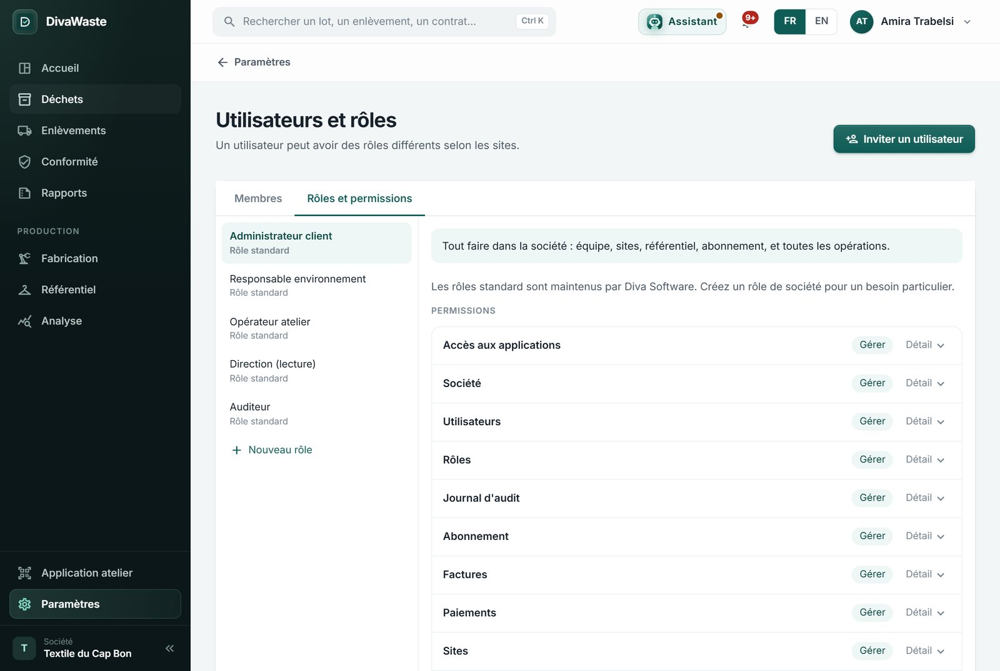
D2Créer un rôle de la société
Nouveau rôle : un libellé (« Chef d'équipe Korba »), puis les domaines à Voir ou Gérer.
Enregistrer : le rôle apparaît dans la liste des rôles à l'invitation et dans « Modifier les rôles ».
Rôles standard et rôles de la société. Les rôles standard sont les mêmes pour toutes les sociétés et suivent les nouvelles versions de DivaWaste. Un rôle de société est à vous seul : il ne reçoit pas tout seul les permissions des nouveaux écrans.
DivaWaste · Guide 7 — Équipe, rôles et accès
E. Votre compte Pour tout le monde, quel que soit le rôle
E1Le menu de votre nom
En haut à droite : Mon profil, Sécurité du compte, Se déconnecter ; et, si vous appartenez à plusieurs sociétés, le choix de la société. Les boutons FR / EN changent la langue de l'écran tout de suite.
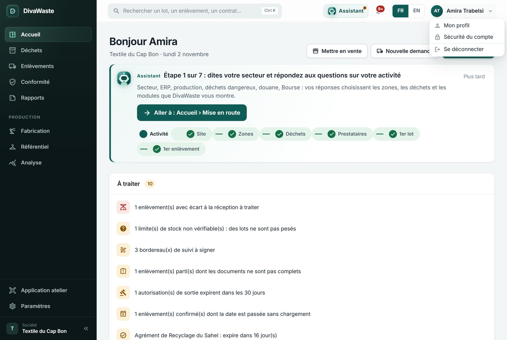
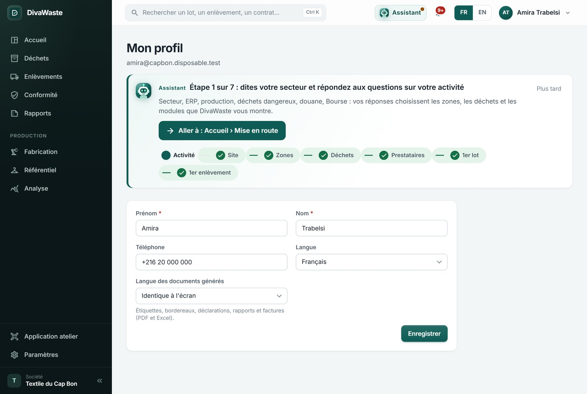
Mon profil : prénom, nom, téléphone, langue de l'écran, et langue des documents générés (étiquettes, bordereaux, déclarations, rapports, factures).
E2Mot de passe et double authentification
Sécurité du compte › Changer le mot de passe : l'actuel, puis le nouveau (12 caractères, une lettre et un chiffre).
Double authentification (TOTP) › Activer : scannez le QR code avec une application d'authentification (Google Authenticator, Microsoft Authenticator…), tapez le code à 6 chiffres, et gardez les codes de secours affichés.
Ensuite, chaque connexion demande le code de l'application. Téléphone perdu : un code de secours, une seule fois chacun.
Recommandé pour les administrateurs et ceux qui signent les bordereaux. La colonne Double authentification de la liste des membres montre qui l'a activée.
DivaWaste · Guide 7 — Équipe, rôles et accès
E3Les notifications
La cloche en haut : le nombre de messages non lus. Cliquez pour les voir ; Tout marquer comme lu.
Préférences de notification (à droite) : pour chaque famille (Stock et capacité, Enlèvements, Bourse, Contrats, Conformité…), recevoir dans l'application et/ou par email.
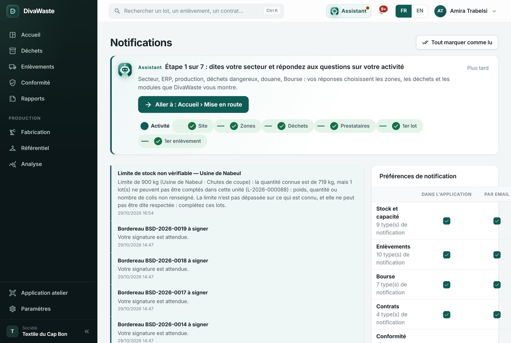
Chaque notification mène à sa page : « Bordereau BSD-2026-0019 à signer » ouvre les bordereaux ; « Limite de stock non vérifiable » ouvre le stock.
E4Mot de passe oublié
Sur la page de connexion : Mot de passe oublié ?, votre email, puis le lien reçu (valable une heure). Après cinq essais faux, le compte est bloqué quelques minutes : attendez, ou utilisez « Mot de passe oublié ».
DivaWaste · Guide 7 — Équipe, rôles et accès
F. Côté prestataire, et côté Diva Software
Rôle
Ce qu'il fait
Administrateur prestataire
Le profil dans l'annuaire, les déchets acceptés, les agréments, l'équipe ; répondre aux demandes, réceptionner, déclarer le traitement, signer, la Bourse (Guide 5).
Opérateur prestataire
Voir les demandes, enregistrer les réceptions (poids reçus) et déposer les certificats. Ni profil, ni agréments, ni Bourse.
Administrateur plateforme
Diva Software : valider les inscriptions et les agréments, les virements, les formules, le catalogue de référence, la matrice des rôles (Guide 10).
Support plateforme
Diva Software : consulter l'activité de la plateforme pour aider un client, sans rien décider.
Un prestataire invite son équipe exactement comme en A : Paramètres › Utilisateurs et rôles › Inviter un utilisateur, rôle Administrateur ou Opérateur prestataire.
Questions fréquentes
« Je ne vois pas le menu Production. »
Le module Production n'est pas activé pour la société (Paramètres › Modules), ou votre rôle n'y a pas droit.
« Le bouton Signer n'apparaît pas. »
Il faut le droit de signer les bordereaux sur ce site (Administrateur client ou Responsable environnement).
« Mon opérateur ne voit pas Korba. »
Son rôle est donné sur Nabeul seulement : ajoutez une ligne Opérateur atelier · Atelier de Korba (C1).
« Qui a supprimé ce lot ? »
Paramètres › Journal d'audit : filtrez sur Lot de déchets et l'action Suppression (Guide 9).
DivaWaste · Guide 7 — Équipe, rôles et accès
Fiche de test
☐
J'invite une personne avec un rôle et un site ; elle apparaît dans « Invitations en attente » avec sa date d'expiration.
☐
« Renvoyer » envoie un nouveau lien ; « Annuler l'invitation » le rend inutilisable.
☐
La personne accepte avec son mot de passe, puis se connecte ; elle passe dans « Membres ».
☐
Un Opérateur atelier arrive dans l'application atelier et ne voit que les zones de son site.
☐
La Direction (lecture) voit l'Accueil et les rapports, sans aucun bouton d'action.
☐
L'Auditeur ouvre le registre, les bordereaux et le journal d'audit.
☐
Cliquer sur la ligne d'un membre ouvre « Modifier les rôles » ; j'ajoute un rôle sur un autre site.
☐
« Suspendre » empêche la connexion ; « Réactiver » rend les mêmes rôles.
☐
Je crée un rôle de la société et je le donne à quelqu'un.
☐
Je change ma langue et la langue des documents dans Mon profil.
☐
J'active la double authentification ; la connexion suivante demande le code.
☐
Je règle une famille de notifications « par email » seulement.